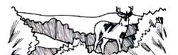
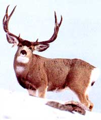

Stalking the muley means tough hiking over broken terrain,
AT THE MEAT MARKET RECENTLY, my attention was captured by a tank containing a dozen or so live lobsters. Their claws were bound with rubber bands; their world reduced to plastic, glass, and a few gallons of stale water; their fate - to be purchased, carted off in a bag, and tossed into a pot of boiling water. My heart went out to these hapless creatures. From the lobster tank, my thoughts wandered to the slaughterhouse, to the poultry factory, to the fetid veal pen, and to various other grisly commercial operations that provide the civilized world with its meat.
And then I thought of deer hunting. By comparison, a natural and marvelous arrangement - for the hunter, and, as I hope to show, for the hunted as well.
Of course, as vegans are quick to point out., the human animal does not need meat, in a biological sense, to survive. So true. In fact, for a couple of years in the mid-'70s, while living on the West Coast, I was a vegetarian myself and enjoyed excellent physical health. Still, at dinnertime, something vital, even primal, seemed to be - well, missing.
Then one night shortly after moving to the rural Rocky Mountains, I was offered meat at the home of a new acquaintance. Wild meat - the cleanest, leanest, most healthful meat there is. I accepted gracefully and ate voraciously. Next thing I knew, I was enjoying meat on a regular basis again, meat I earned by hunting the elusive but abundant deer.
By the early 1900s, due to habitat lost to settlement and the commercial slaughter of millions of deer, primarily for their hides, America's total deer population was down to a scant half million. It was sport hunters who sounded the first alarm, calling for stiff protective laws and special taxes on hunting and hunting-related goods, taxes earmarked for funding wildlife restoration, management, and habitat protection programs. Our deer, elk, wild turkey, and black bear were saved, as were many other creatures, both those hunted for their meat and those who thrill us all with their beauty, grace, and songs.
But hunting involves killing - what of the killing?
Notwithstanding emotional and, I think, myopic predictions to the contrary, after about 20 years of hunting I have not found the activity to have desensitized me to death and suffering, much less has it instilled 'in me a taste for blood and violence. It was, in fact, fair-chase hunting (as opposed to the opprobrious practices of hunting mountain lions with hounds or using bait when hunting bears) that taught me to appreciate nature and led me to become an avid conservationist and even something of a naturalist. I believe this: If a hunter is a bloodthirsty slob, he or she was that a priori, in spite of hunting rather than because of it.
But what of the victims?
I have witnessed the nightmare of the slaughterhouse, I have held my nose while touring a poultry operation, I have watched bound lobsters agonizing in a 10-gallon purgatory - and I have seen the wild deer die at the hands of a hunter. Forced to a choice, I would choose to be a deer - born free, living wild, and, sooner or later, dying quickly and cleanly with a bullet or arrow through my heart. Further, were our 17 to 21 million deer given a voice in the matter, I venture they would support hunting themselves - for without it, only a few of them would ever know life at all. And as to being subjected to the terror of the hunt, deer evolved as a prey species - nervous by nature, wound spring - tight, past masters of evasion. Civilized man has removed most of the deer's natural predators from the wild; were deer not hunted by man, they soon would become something less than the clever and elusive creatures whose appearance is so rare, fleeting, and magical that it quickens the pulse.
The deer I know best is the western muley. Even though a handful of whopper whitetails in the 400-pound category have turned up over the years, the mule deer, on the average, is the larger-bodied of the two, with mature bucks frequently topping 300 pounds. The muley's antlers are proportionately larger and are bifurcate, or forked, rather than having all the tines sprouting from a single main beam as does the whitetail's. And there are other distinctions, both morphological and behavioral. Even so, it's not the differences between the two species that dictate how each is hunted, so much as the geography and vegetation of the dissimilar biomes they inhabit.
For a p rime example, sitting in a tree in a hardwood forest, overlooking the intersection of two or more well-used game trails is arguably the most productive method of hunting whitetails. But tree-standing is rarely used and only occasionally successful for mule deer. That's because muleys are more wide-ranging and less predictable in their daily movements than whitetails; also, much of the best of their habitat (above-timberline tundra, sage and piñon-juniper flats, slickrock canyons, and desert) has no climbable trees. Similarly, antler rattling, squatting in a ground blind, hunting over rutting scrapes, and calling - all of which can be lucrative whitetail tactics-are far less effective for mule deer. And still-hunting-moving slowly and quietly through the forest in hopes of seeing a deer before it spots you - while po tentially equally effective for both species, is less productive for mule deer simply because of numerical probabilities: There are fewer muleys than whitetails, and they're scattered over a much broader and an often more rugged range.
The favored tactic for mule-deer hunting - a tactic that is aided rather than hindered by the West's great expanses of sparsely vegetated terrain - is spotting and stalking. That is, locating an animal from a distance through binoculars or a spotting scope, then stalking carefully to within shooting range. While this is certainly not the only workable system for hunting mule deer, nor even the best in all situations, it has proven to be the most productive in general.
The American West is blessed with millions of acres of game-rich public lands, and this is where most mule-deer hunting takes place. Therefore, when planning a trip to an unfamiliar part of the West, start by sending for BLM (Bureau of Land Management) and Forest Service maps for the area you plan to visit. With maps in hand, phone the wildlife department of the state you plan to hunt, and ask to speak with the terrestrial wildlife biologist. Request a hunter's regulations and in formation packet, and if you have a particular region in mind, inquire about the deer hunting thereabouts. If you've yet to select a hunting area, ask about zones that need more hunting pressure; hunting is the primary deer management tool, and a competent state biologist will direct you to those areas currently carrying more deer than they can support and suffering the various woes this situation entails (including frequent deer-auto collisions, crop damage, and overgrazing of natural forage, which leads to a high winterkill from starvation and disease). Pinpoint these zones on your public-lands maps, then send for the corresponding USGS (U.S. Geological Survey) topographic quadrangles, and study them until you have a feel for the terrain. Finally, visit the library for a good book on the natural history and hunting of mule deer. In short, do your homework.
Plan to arrive early for the hunt, and invest a day (at least) in scouting. Using what you've learned, select a few likely vantages upon which to park yourself at daylight and from which to glass for-what? For movement along game trails, for a flash of polished antler from the shade of a piñon pine, for a white spot (rump patch) on a dun hillside, for birds startled from their roosts, and for other telltale signs of deer activity. Know that mule deer generally, during early or midmorning, move up from feeding and watering areas to day beds near the tops of timbered ridges and brushy draws, then drift back down again toward evening. Once bedded, if undisturbed, most muleys will stay put throughout midday, allowing ample time to run a careful stalk.
When you spot an animal you wish to pursue, mark its location in your mind and on your topo map, check the wind direction, and get moving, being careful to remain quiet, below the deer's line of sight, and downwind, perhaps circling far out of the way.
Which brings us to physical conditioning: While the average whitetail hunt may involve walking as little as a few hundred yards from your car, or at most, a few miles before spending most of the day sitting as still as a plaster Buddha, the average mule-deer hunt is likely to entail several miles of tough hiking over steep, broken terrain, often at considerable altitudes. And if and when you manage to down an animal, you must have steam enough left to pack the meat out to the nearest road, which probably won't be near at all. Be fit, or be ready to hurt.
Virtually any fast, flat-shooting, hardhitting rifle will do for mule deer. Favored calibers include .270, .243, and the old reliable .30-06 with 150-grain bullets. Scope sights are a must for the long shots often required in opencountry hunting; many hunters here in southwestern Colorado sight their rifles to hit six inches high at 100 yards, which-with many calibers-allows aiming dead-on at all ranges from 50 out to 300 yards.
Whatever the weapon, please use it safely, well, and honorably. Deer are not lobsters in a tank, and hunting them is much more than a visit to the meat market.
-David Petersen
|
 |
|
 |